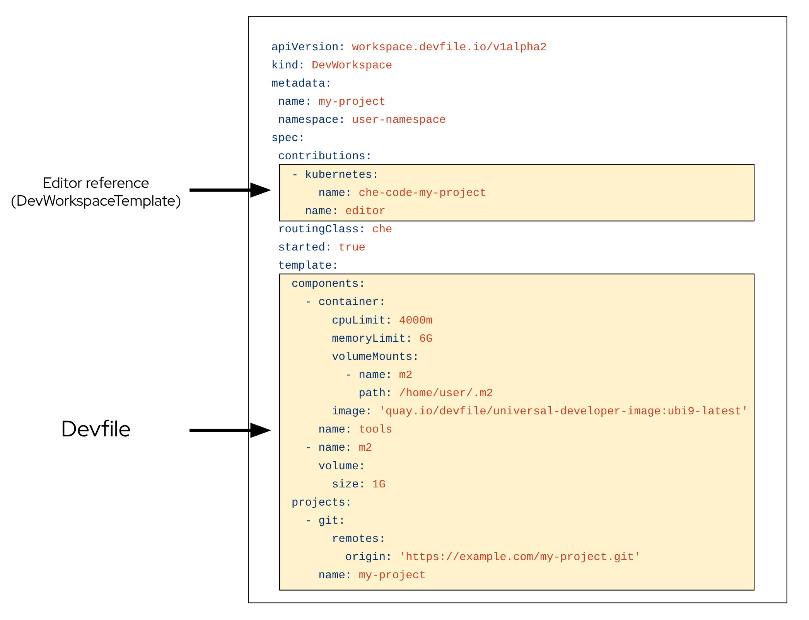
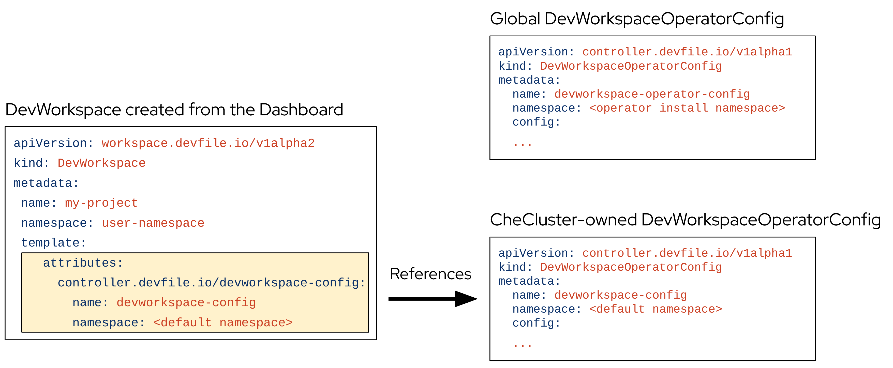

DevWorkspace Operator and workspace pods
The DevWorkspace Operator (DWO) extends Kubernetes to manage workspace pods, services, and persistent volumes by reconciling DevWorkspace custom resources. Every Che workspace has an underlying DevWorkspace CR that contains the devfile, editor definition, and configuration attributes.
The DevWorkspace CR is a Kubernetes resource representation of a Che workspace. Whenever a user creates a workspace using Che in the background, Dashboard Che creates a DevWorkspace CR in the cluster. For every Che workspace, there is an underlying DevWorkspace CR on the cluster.

When creating a workspace with Che with a devfile, the DevWorkspace CR contains the devfile details. Additionally, Che adds the editor definition into the DevWorkspace CR depending on which editor was chosen for the workspace. Che also adds attributes to the DevWorkspace that further configure the workspace depending on how you configured the CheCluster CR.
A DevWorkspaceTemplate is a custom resource that defines a reusable spec.template for DevWorkspaces.
When a workspace is started, DWO reads the corresponding DevWorkspace CR and creates the necessary resources such as deployments, secrets, configmaps, and routes. As a result, a workspace pod representing the development environment defined in the devfile is created.
Custom Resources overview
The following Custom Resource Definitions are provided by the DevWorkspace Operator:
-
DevWorkspace -
DevWorkspaceTemplate -
DevWorkspaceOperatorConfig -
DevWorkspaceRouting
DevWorkspace
The DevWorkspace custom resource contains details about an Che workspace. Notably, it contains devfile details and a reference to the editor definition.
DevWorkspaceTemplate
In Che the DevWorkspaceTemplate custom resource is typically used to define an editor (such as Visual Studio Code - Open Source) for Che workspaces. You can use this custom resource to define reusable spec.template content that is reused by multiple DevWorkspaces.
DevWorkspaceOperatorConfig
The DevWorkspaceOperatorConfig (DWOC) custom resource defines configuration options for the DWO. There are two different types of DWOC:
-
global configuration
-
non-global configuration
The global configuration is a DWOC custom resource named devworkspace-operator-config and is usually located in the DWO installation namespace. By default, the global configuration is not created upon installation. Configuration fields set in the global configuration apply to the DWO and all DevWorkspaces. However, the DWOC configuration can be overridden by a non-global configuration.
Any other DWOC custom resource than devworkspace-operator-config is considered to be non-global configuration. A non-global configuration does not apply to any DevWorkspaces unless the DevWorkspace contains a reference to the DWOC. If the global configuration and non-global configuration have the same fields, the non-global configuration field takes precedence.
| Global DWOC | Che-owned DWOC | |
|---|---|---|
Resource name |
|
|
Namespace |
DWO installation namespace |
Che installation namespace |
Default creation |
Not created by default upon DWO installation |
Created by default on Che installation |
Scope |
Applies to the DWO itself and all DevWorkspaces managed by DWO |
Applies to DevWorkspaces created by Che |
Precedence |
Overridden by fields set in Che-owned config |
Takes precedence over global config if both define the same field |
Primary use case |
Used to define default, broad settings that apply to DWO in general. |
Used to define specific configuration for DevWorkspaces created by Che |
For example, by default Che creates and manages a non-global DWOC in the Che namespace named devworkspace-config. This DWOC contains configuration specific to Che workspaces, and is maintained by Che depending on how you configure the CheCluster CR. When Che creates a workspace, Che adds a reference to the Che-owned DWOC with the controller.devfile.io/devworkspace-config attribute.

DevWorkspaceRouting
The DevWorkspaceRouting custom resource defines details about the endpoints of a DevWorkspace. Every DevWorkspace has its corresponding DevWorkspaceRouting object that specifies the workspace’s container endpoints. Endpoints defined from the devfile, as well as endpoints defined by the editor definition appear in the DevWorkspaceRouting custom resource.
apiVersion: controller.devfile.io/v1alpha1
kind: DevWorkspaceRouting
metadata:
annotations:
controller.devfile.io/devworkspace-started: 'false'
name: routing-workspaceb14aa33254674065
labels:
controller.devfile.io/devworkspace_id: workspaceb14aa33254674065
spec:
devworkspaceId: workspaceb14aa33254674065
endpoints:
universal-developer-image:
- attributes:
cookiesAuthEnabled: true
discoverable: false
type: main
urlRewriteSupported: true
exposure: public
name: che-code
protocol: https
secure: true
targetPort: 3100
podSelector:
controller.devfile.io/devworkspace_id: workspaceb14aa33254674065
routingClass: che
status:
exposedEndpoints:
...DevWorkspace Operator operands
The DevWorkspace Operator has two operands:
-
controller deployment
-
webhook deployment.
$ oc get pods -l 'app.kubernetes.io/part-of=devworkspace-operator' -o custom-columns=NAME:.metadata.name -n openshift-operators
NAME
devworkspace-controller-manager-66c6f674f5-l7rhj
devworkspace-webhook-server-d4958d9cd-gh7vr
devworkspace-webhook-server-d4958d9cd-rfvj6where:
devworkspace-controller-manager-*-
The DevWorkspace controller pod, which is responsible for reconciling custom resources.
devworkspace-webhook-server-*-
The DevWorkspace operator webhook server pods.
DevWorkspace-controller-manager deployment
You can configure the devworkspace-controller-manager pod in the DevWorkspace Operator Subscription object:
apiVersion: operators.coreos.com/v1alpha1
kind: Subscription
metadata:
name: devworkspace-operator
namespace: openshift-operators
spec:
config:
affinity:
nodeAffinity: ...
podAffinity: ...
resources:
limits:
memory: ...
cpu: ...
requests:
memory: ...
cpu: ...DevWorkspace-webhook-server deployment
You can configure the devworkspace-webhook-server deployment in the global DWOC:
apiVersion: controller.devfile.io/v1alpha1
kind: DevWorkspaceOperatorConfig
metadata:
name: devworkspace-operator-config
namespace: <DWO install namespace>
config:
webhooks:
nodeSelector: <map[string]string>
replicas: <int>
tolerations: <[]corev1.Toleration>